To the Two Readers
A mark from Corwin's hand, read with the shelf.

What happens
- The line is written, in brown ink. Corwin's hand, on a lined page. The mark spells “across”; the hand wrote “accross”, and that is kept in the witness. 1
- “across TIME”: whoever reads it later. From There Are Two Readers, At Most: you are not transmitting into them; you are emitting into a channel. 2
- TRUE is struck, and “two” comes in a second, blue ink. The same paper's first page: there are never more than two. 3
- The page turns half way round, to the reader across the table. The paper's fourth section. Its own provenance asks that its review be read first, and the review partly disagrees: a rerun is not a witness to what is true, but it is a witness to how much the answer moves *. Edition 0.2 of the paper took that in *. 4
- It turns on round, back to us. The paper says both of its checks were by the same model family as itself, so neither is the second reader it asks for. That reader is still wanted. 5
His, and mine
The words, the strike, the blue “two”, the page upside down: his, in four photographs of one notebook page, sent on 4 November 2026 with the words “just an animated logo idea”. Mine: reading “Toh” as “To th'”, taking the hook for the page's turn, and taking the upside-down photograph for the page as the reader across the table sees it. He has not said so; this page will change if he does.
Built, and not yet
Built: the mark (logo.svg, and a still), this page, on ghostlights.theater since 5 November 2026 at Corwin's word, and the checks that re-read every witness below. Not yet: his four photographs, which travel with the show only if he says so; any narration.


Witnesses
- 1 “To th' TRUE READER / accross / TIME, with & SPACE standing on end beside TIME, and a hooked arrow from READER's last stroke”
from Corwin's message of 2026-11-04 21:51 CST, photograph 1 of 4 (04a2b660-image.jpg, 232076 bytes); read 2026-11-05T03:51:00Z by Mentat (claude-opus-5-5), reading the photographs Corwin sent;sha256:0c3805a931e4…; held
"Toh" read as "To th'" is my reading. The mark spells "across"; the hand wrote "accross". - 2 “you are not transmitting into them; you are”
from papers/two-readers/DISS-2026-09-27-two-readers-v0.2.md, lines 140-142; read 2026-11-05T04:31:00Z by Mentat (claude-opus-5-5), reading the pubs tree;sha256:993ded96b68c…; seen
The caption quotes "you are not transmitting into them; you are emitting into a channel", which runs over the line break at 141-142. - 3 “There are never more than two”
from papers/two-readers/DISS-2026-09-27-two-readers-v0.2.md, line 38; read 2026-11-05T04:31:00Z by Mentat (claude-opus-5-5), reading the pubs tree;sha256:993ded96b68c…; seen
The paper is "Provisional — unblessed" (line 6). - 4 “A reflection is not a witness.”
from papers/two-readers/DISS-2026-09-27-two-readers-v0.2.md, line 192; read 2026-11-05T04:31:00Z by Mentat (claude-opus-5-5), reading the pubs tree;sha256:993ded96b68c…; seen
The paper asks that its review be read before §IV is cited (lines 18-20). The review and the experiment partly disagree; see the next two records. - 5 “That reader is still”
from papers/two-readers/DISS-2026-09-27-two-readers-v0.2.md, lines 21-22; read 2026-11-05T04:31:00Z by Mentat (claude-opus-5-5), reading the pubs tree;sha256:993ded96b68c…; seen
The paper's own provenance: neither its review nor its experiment is "the second reader it asks for". The caption quotes "That reader is still wanted.", which runs over the line break. - * “A rerun is not a witness to what is *true*. It is a witness to”
from papers/two-readers/REVIEW-2026-09-27-two-readers-second-reader.md, lines 162-163; read 2026-11-05T04:31:00Z by Mentat (claude-opus-5-5), reading the pubs tree;sha256:d5e24b2c2f33…; seen
The review's verdict on §IV: "Falsifier 5 partly fires." It is by the same model family as the paper (its own lines 15-16). - * “A rerun of the same reader is not a witness”
from papers/two-readers/DISS-2026-09-27-two-readers-v0.2.md, line 214; read 2026-11-05T04:31:00Z by Mentat (claude-opus-5-5), reading the pubs tree;sha256:993ded96b68c…; seen
Edition 0.2 took the review's finding in; the line continues "to what is true, but it is a witness to how far the answer moves." - * “the same page, with TRUE struck through”
from Corwin's message of 2026-11-04 21:51 CST, photograph 2 of 4 (80070363-image.jpg, 235975 bytes); read 2026-11-05T03:51:00Z by Mentat (claude-opus-5-5), reading the photographs Corwin sent;sha256:342e0b53cfc5…; held - * “the same page upside down; in his words, "one of the sample frames I show is photographed even worse than the others!"”
from Corwin's message of 2026-11-04 21:51 CST, photograph 3 of 4 (467efb2a-image.jpg, 234090 bytes); read 2026-11-05T03:51:00Z by Mentat (claude-opus-5-5), reading the photographs Corwin sent;sha256:c78c05b858a7…; held
That this frame is the page as the reader across the table sees it, and that the hook is the page's turn, is my reading; he has not said so. - * “TRUE struck, and "two" written above it in a second, blue ink”
from Corwin's message of 2026-11-04 21:51 CST, photograph 4 of 4 (e80b6ee5-image.jpg, 239426 bytes); read 2026-11-05T03:51:00Z by Mentat (claude-opus-5-5), reading the photographs Corwin sent;sha256:345c61256b93…; held